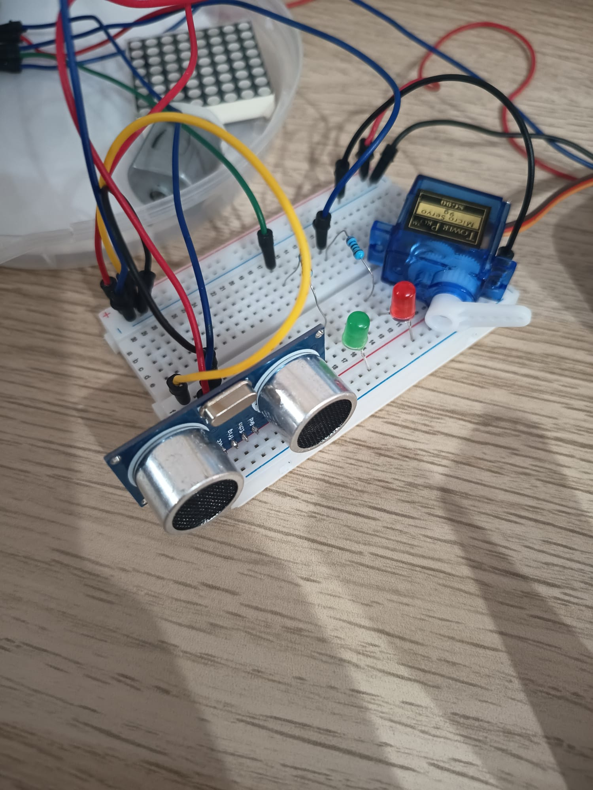
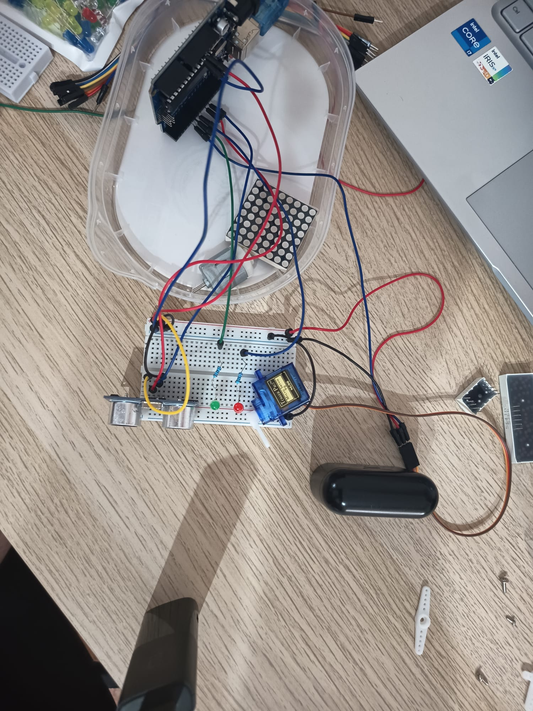

Primer proyecto de electrónica y sistemas embebidos · Arduino · Sensor ultrasónico · Servo
Este proyecto implementa un sistema embebido de control de acceso para un aparcamiento mediante un microcontrolador Arduino. El sistema detecta la presencia de un vehículo utilizando un sensor ultrasónico HC‑SR04 y acciona una barrera automática mediante un servo SG90. Además, incorpora señalización luminosa mediante LEDs para indicar el estado del sistema.
El objetivo principal es desarrollar un prototipo funcional que integre sensado, lógica de control y actuación, aplicando principios básicos de electrónica digital y sistemas embebidos.
El sistema se compone de cuatro módulos principales:
El sistema utiliza un umbral fijo de 5 cm para determinar la presencia de un vehículo. La función
medirDistancia() implementa el protocolo del HC‑SR04:
El código completo se encuentra integrado en esta página.
Este proyecto constituye una primera aproximación al diseño de sistemas embebidos reales, integrando sensado, control y actuación. Es una base sólida para desarrollar sistemas más complejos en el futuro.


Aquí está el código completo del sistema:
#include <Servo.h>
// Pines del sensor ultrasónico
const int trigPin = 9;
const int echoPin = 10;
// Pines del servo
const int servoPin = 5;
// Pines de LEDs
const int ledVerde = 6;
const int ledRojo = 7;
Servo barrera;
long medirDistancia() {
digitalWrite(trigPin, LOW);
delayMicroseconds(2);
digitalWrite(trigPin, HIGH);
delayMicroseconds(10);
digitalWrite(trigPin, LOW);
long duracion = pulseIn(echoPin, HIGH);
long distancia = duracion * 0.034 / 2;
return distancia;
}
void setup() {
Serial.begin(9600);
pinMode(trigPin, OUTPUT);
pinMode(echoPin, INPUT);
pinMode(ledVerde, OUTPUT);
pinMode(ledRojo, OUTPUT);
barrera.attach(servoPin);
barrera.write(0);
digitalWrite(ledRojo, HIGH);
digitalWrite(ledVerde, LOW);
}
void loop() {
long distancia = medirDistancia();
Serial.print("Distancia: ");
Serial.print(distancia);
Serial.println(" cm");
if (distancia < 5) {
digitalWrite(ledVerde, HIGH);
digitalWrite(ledRojo, LOW);
barrera.write(90);
delay(3000);
barrera.write(0);
delay(1000);
}
else {
digitalWrite(ledRojo, HIGH);
digitalWrite(ledVerde, LOW);
barrera.write(0);
}
delay(100);
}